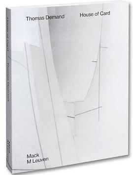

《生活世界中的功利主义：哲学原理与历史实践》

总体观点
《生活世界中的功利主义》为长期在中文语境中被简单等同于“自私自利”的功利主义（Utilitarianism，或译功用主义）进行了正本清源的学术辩护。龚群教授指出，功利主义的核心绝非狭隘利己，而是以“最大多数人的最大幸福”为最高道德判准，是近代以来推动法治平等、废除酷刑与建立现代福利制度的最重要启蒙哲学力量。
全书以理论与生活世界的互构为主线，既深入拆解了边沁的痛苦快乐算术与密尔对高级快乐的质性修正，又正面回应了罗尔斯《正义论》关于“功利主义无视个人权利神圣性”的世纪大批判。通过将功利原则引入现代公共政策评估、成本收益分析与生命医疗伦理，展现了这一古老流派在现代风险社会治理中不可或缺的实践理性力量。
核心观点
-
1. 破除污名化：功利主义追求的是“最大多数人的最大福祉”
功利主义在道德评估中要求行为主体保持完全公正无私的旁观者态度，每一个人的快乐都被同等计算，绝不容许将个人私利置于公共福祉之上。
边沁主张法律改革时提出“每个人算作一人，无人可算作多于一人”，在十八世纪英国特权阶层面前确立了平等的激进底色。 -
2. 密尔的高级快乐论：做一个痛苦的苏格拉底
快乐不仅有量的多寡，更有质的高下；智识、审美与道德层面的高级精神快乐，永远优于纯粹感官肉体满足，捍卫了人性的尊严高度。
密尔名言：“做一个痛苦的苏格拉底，远胜于做一头快乐的猪；如果猪对此持有异议，那仅仅是因为它只体验过猪的生活。” -
3. 行为功利主义转向规则功利主义的制度防御
为避免每一次具体行为算计导致践踏基本信义，规则功利主义主张遵守一套“长远来看能够带来最大普遍福利的道德规则（如不撒谎、守契约）”。
医生不能为了救活五个垂危病人而私自摘取一个健康无辜路人的器官，因为遵守“保护生命不可侵犯规则”是全社会安全感的基石。 -
4. 罗尔斯的批判与反思：个人权利的不可交易性
罗尔斯深刻指出功利主义将社会整体视为一个人，为了总体福利总量的最大化可以牺牲少数弱势群体的正当权利，必须用正义原则予以纠偏。
全社会多数人的幸福感提升，绝不能建立在剥夺少数弱势群体基本言论自由或强行占有其合法私有财产的霸道逻辑之上。 -
5. 公共政策中的成本收益分析与道德天平
在现代卫生健康、交通基建与环境保护决策中，功利主义的量化评估提供了无可替代的理性工具，但也必须时刻警惕生命被货币化折算的伦理冷血。
政府在审批昂贵罕见病靶向药是否纳入医保目录时，必须在有限财政预算救治人数与极端高价救命药之间做出极其沉重的功用权衡。
全书结构
-
第一部分：古典功利主义的创立与范式演变
梳理功利主义哲学源头；边沁的痛苦与快乐量化计算体系；密尔对古典功利主义的批判性继承与高级精神快乐理论的确立。
对比边沁将推针游戏与诗歌欣赏置于同等地位的激进经验主义，与密尔强调人类尊严意识在快乐评价中的决定性作用。 -
第二部分：现代功利主义的理论分化与重构
西季威克在伦理学方法上的折衷综合；二十世纪行为功利主义与规则功利主义的激烈论辩，偏好功利主义与福祉经济学的发展。
分析哈萨尼将现代博弈论与决策理论引入功利主义，论证规则功利主义如何与现代立宪民主制度达成理论自洽。 -
第三部分：正义之辩——罗尔斯与功利主义的交锋
深度解析罗尔斯《正义论》对功利主义的体系化批判；无知之幕、差别原则与权利优先性原则对功利主义道德缺陷的致命抨击。
拆解罗尔斯“原初状态”思想实验，证明理性人在不确定自己处于社会何种阶层时，绝不会选择允许牺牲少数人的功利主义体制。 -
第四部分：生活世界中的伦理应用与现实挑战
功利主义在当代公共政策制定、环境保护碳中和目标、医学器官分配以及人工智能电车难题算法设计中的具体落地博弈。
分析自动驾驶汽车在不可避免的碰撞事故中，算法是应当优先保护车内乘客还是优先追求整条道路伤亡人数最小化的功利主义困境。 -
第五部分：功利主义与现代美好生活的构建（结语）
总结功利主义对当代中国社会道德建设与国家治理现代化的启示：倡导务实包容的公共理性，追求兼顾效率与公平的共同富裕。
提出在社会主义市场经济体制下，既要发挥市场激励提高全社会财富蛋糕总量，又要通过再分配切实保障全体人民共享发展成果。